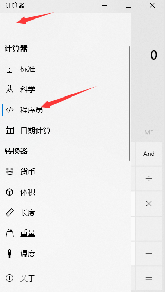
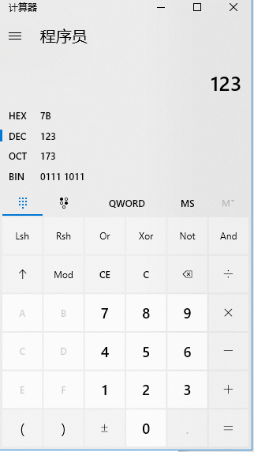

导读：C语言程序中经常涉及一些数学计算，所以要熟悉其基本的数据类型。数据类型学习起来比较枯燥，不过结合之前的内存概念，以及本节的字节概念，相信数据类型也就不难理解了。本章从二进制的基本概念开始，然后介绍机器语言通用的计算单位字节，最后再介绍C语言中基本的数据类型及其基本概念。
4.1 二进制、字节
计算机，电子信息专业类的大学课程，肯定会有讲解二进制与十进制转换的课程，本节为了篇幅小一点，只提供windows计算器中进制转换工具的使用方法，希望读者谅解。
4.1.1 二进制
机器之间沟通用的是机器语言，机器语言用二进制数据相互沟通，什么是二进制数据？为什么是二进制数据呢？我们日常生活中比较熟悉的是十进制数据，当数字从1开始不停的加1，加到10的时候再加1就会变成11，那么个位又变回1了，这就叫做满10进1。
还有比较熟悉的是十二进制，就是我们的时钟了，当时针从1开始不停加到12时，再加1，时针就又变成1了。当然如果有人习惯24小时制，那就理解为二十四进制也可。
图4.1 时钟
同理，分针和秒针就是60进制了，满60进1。
那么，二进制就应该是满2进1咯，对的，举个简单例子：十进制的1,2,3在二进制为01,10,11。可以看到十进制的3在二进制的第一位为1，因为它满2就进1了。
平时用进制转换可以搬用公式计算，当然快捷的办法是用windows自带的计算器，打开win10系统的计算器软件，选择程序员选项。
注意：不同版本的windows的计算器用法稍微不同，请读者自行了解。

图4.2 windows计算器
鼠标点击DEC，选择十进制，在DEC中输入123，可以发现二进制BIN为01111011，八进制OCT为173，十六进制为7B，如图4.3所示，

图4.3 计算器进制转换
计算器基本用法就是这样了。
注意：为什么机器语言是二进制语言？涉及到数字电路方面的知识，说白了CPU，内存这些就是大量的开关组合起来的，开就是1，关就是0，这正是二进制的一种体现。
4.1.2 字节
二进制最小单位是位（bit），英文有个词组叫做a little bit，意思就是一点点，bit就是最小的位元，比如十进制1的二进制有一个位，十进制2的二进制有两个位“10”，十进制3的二进制也能用两位表示“11”，十进制4的二进制用三个位表示“100”。但是C语言内存中最小数据是1个字节（byte），1个字节有八个位，也就是十进制1的二进制表示为“00000001”，十六进制表示为“0x01”。来个复杂的，十进制的141表示为......打开计算器，可知二进制为“10001101”，它的十六进制为“0x8D”。
注意：十六进制一般会在数值前添加“0x”，用于区分十进制类似的数，比如十进制69和十六进制69就不相等，十六进制的69等于十进制的105，所以用“0x69”表示十六进制。
因为1个字节有八位，所以1个字节数值范围在0~255之间，因为当二进制八位数都为1时即“11111111”最大，等于255。
所以2个字节有十六位，数值范围在0~65535之间，因为当二进制十六位数都为1时即“1111111111111111”最大，等于65535。
所以4个字节有三十二位，数值范围在0~4294967295之间......
所以8个字节有六十四位，数值范围在......
4.2 基本数据类型
C语言中基本数据类型有字符型char，布尔型bool，整型int，长整型long，浮点型float等等，对应的还有无符号字符型unsigned char，无符号整型unsigned int等等。
数据类型有很多，目前就介绍6种，但是如何运用它们呢？我觉得只需要知道这个数据类型的取值范围以及占用多少字节即可。下表请死记硬背：
|
数据类型 |
取值范围 |
占用字节数 |
|
char |
-128 到 127 |
1 |
|
int |
-2,147,483,648 到 2,147,483,647 |
4 |
|
float |
1.2E-38 到 3.4E+38 |
4 |
|
unsigned char |
0 到 255 |
1 |
|
unsigned int |
0 到 4,294,967,295 |
4 |
|
bool |
true或者false |
2 |
表4.1 列举一些基本数据类型
注意：当然C语言数据类型不止这些，因为这系列博客只是编程入门篇，不是搬移各个博客的汇总篇，所以数据类型只介绍其中一部分，日后需要了解别的部分应该就能更轻松的了解。
发现问题：表中char型和unsigned char型的占用字节数都是1个，但是取值范围不同。
解释：unsigned的英文直译是无符号的，而负数的符号是一个负号“-”，所以无符号就是无负号，就是大于0的数。而有符号，就是能够有负号，可以取值小于0，这样就不难理解他们的取值范围了。
注意：数据类型不加unsigned默认为有符号类型。
比如char，是可以有负号的char，取值范围可以小于0，由于占的字节数是1个，所以范围是-128~127，数据的变化总量就是|-128|+127=255，正好是一个字节的取值量。
unsigned char，是无符号的char，取值范围必须大于0，范围是0~255,。同理，int和unsigned int也是这样对比。
float类型是浮点类型，说白了就是带小数点的，比如float类型的值可以取3.1415，而int类型只能取值为3，后面章节讲到运算方面会再次对比float和int。
编程的时候会需要做程序判决功能，就会用到bool类型的数据，取值有真true和假false两种。